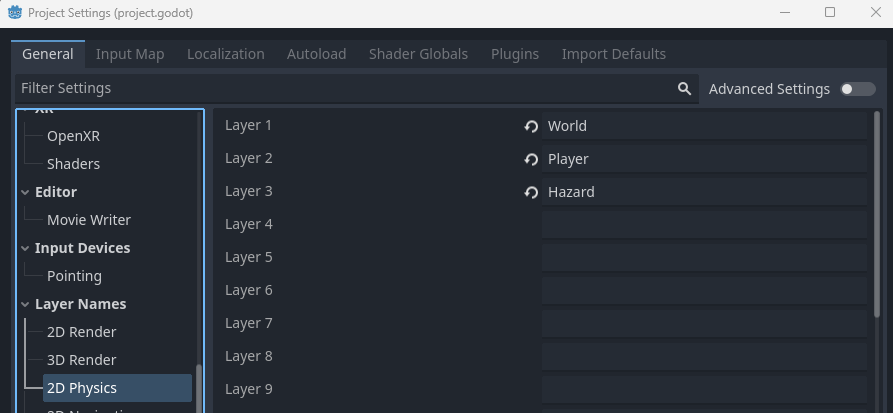
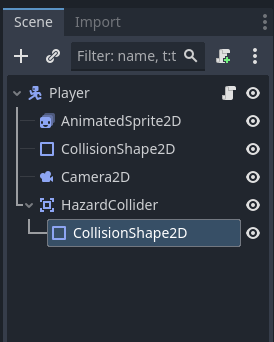
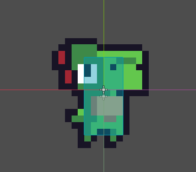
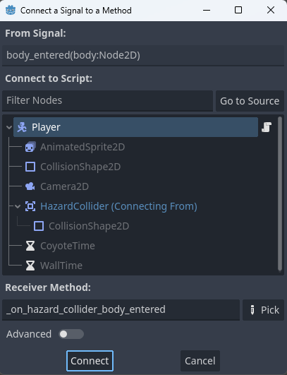
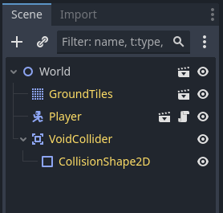
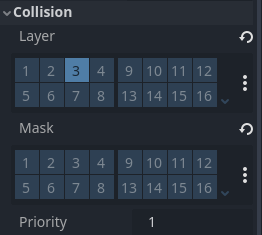
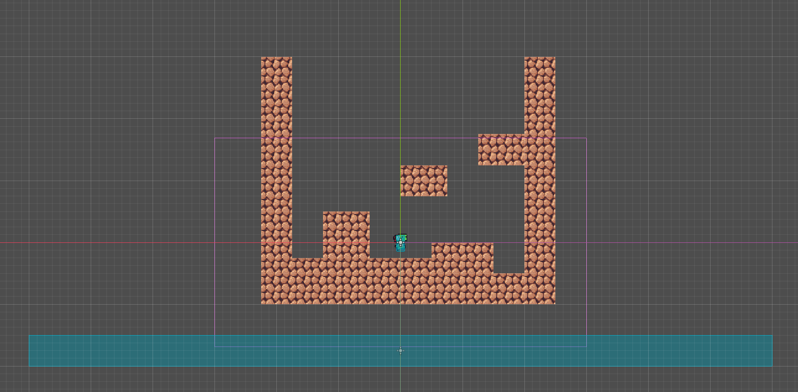

Setting Up Hazards
On this page we will add the ability for the player to die and respawn, as well as our first hazard: the bottomless void.
Creating the Hazard Physics Layer
Before we can create any functionality for hazards, we need to let Godot know we want to track a new physics layer. Navigate to project settings, then find the Layer names -> 2D Physics option. Name a new layer Hazard.
Adding a Hazard Collider on the Player
Next, we need to add a way for the player to detect hazards. We can do this by going to our player scene, right-clicking our player node and adding a new Area2D node. Let's name the new node HazardCollider. Then, right-click the new node and add a CollisionShape2D node.
Right now, however, our collider is still set to default layers and masks. For this specific collider we don't need a layer, as it won't physically stop anything, but we want to set it's mask to our new hazard layer. We can set the collision layers in the inspector while having the HazardCollider selected.

Next, select the new collision shape, go to the inspector and add a new rectange shape. Let's resize it to fit the player closer.
Note that I made the hazard collider shape smaller than we did the player's collider. This is to grant the player more wiggle room and is good practice for any collisions that have a negative result.
Connecting the Collider to the Player Script
Now our collider will detect hazards, but it still won't do anything on it's own. In order to remedy this we need to have the collider send a Signal to our player script when it enters a hazard. Signals are the way that children nodes can communicate events to its parent node (a parent node can simply call a child node using its path, like what we did for the player's AnimatedSprite2D node.) To connect a signal, select the HazardCollider node and navigate to the top of the inspector. Select the node tab, and you will see a list of available signals the node can send.

Select the body_entered signal and a new menu will appear:
Make sure you have the player node selected, then select Connect. At the bottom of the player script a new function should appear called _on_hazard_collider_body_entered. Go ahead and repeat the same steps for the area_entered signal, as we want to be able to detect both.
The difference between collision bodies and areas comes down to how their collision works. An area only provides detection and influence, and will not stop objects. A body on the other hand, will collide with and stop objects based on it's layers. You can learn more about Godot's collision objects throught thier documentation Here
Right now neither signal has any functionality. To add some we need to decide what we want to happen to the player when they collide with a hazard. For now we will simply return the player to their starting point, but other modules will expand on this. To start lets create a new variable to store our player's initial position. We will add it to our reference variables:
# Reference Variables
var gravity = ProjectSettings.get_setting("physics/2d/default_gravity")
@onready var sprite = $AnimatedSprite2D
var respawn_point = Vector2.ZERONext lets save the player's position when it is fully loaded. We will do this in the ready function (if you do not have a ready function, don't worry! You may not of needed it until now. It runs once when the game starts.)
func _ready():
respawn_point = positionWe still need to reset the player's position after they collide with a hazard. Though to save the hassle of repeating code (and in order to make changes easier), we will make a new die function that we can call in both signals. In it we will set the player's position back to it's respawn_point.
func die():
position = respawn_pointFinally we can connect the signals with our new function. To do so we will use the call_deferred("die") method in both signals.
func _on_hazard_collider_body_entered(_body):
call_deferred("die")
func _on_hazard_collider_area_entered(area):
call_deferred("die")We use the call_deferred method in order to make sure the function we gave it does not run until the end of the current physics loop. While not required for the function right now, we will need it for more complex behaviors in some other modules.
Adding the Void
You may notice that even if we boot up the game, there is nothing for our collider to detect! To fix this, as well as another glaring issue, we will add a new collider in the world to catch any player that falls off the map. To start, go to our world scene, right click our world node and add a new Area2D node. Lets name it VoidCollider, then right click the new node and add a CollisionShape2D node.
You may notice the yellow names. This is due to me having implemented multiple levels, but will not change anything for you. If you would like to check out how to add multiple levels you can Here
Next, select the void collider node and find the collision section in the inspector. We will set it's layer to be our hazard layer and it's masks will be empty.
Finally, select the void collider's collision shape node and add a new rectangle shape. Lets resize it to extend past the bounds of the level to make sure the player cannot get past it and be softlocked.
And your done! Go ahead and test out your new collider (you may need to edit your level) and respawn, then move on to another module!